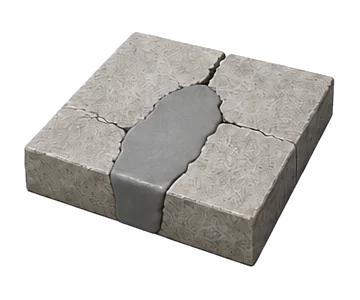
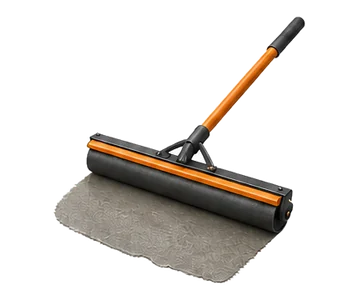

Crack review
Width, length, movement signs, and surrounding slab condition are captured.

Concrete repair & resurfacing
Turn cracked, worn, scaled, or tired concrete into a clear repair or resurfacing scope before money is spent in the wrong place.
Damage first, method second
Not every slab needs replacement. Some surfaces need crack treatment, edge repair, grinding, overlay, or targeted resurfacing. The service brief separates cosmetic wear from structural concern so the next step is practical.

What is included
Repair planning is more surgical than installation. The page uses a matrix layout so the options stay scannable.
Width, length, movement signs, and surrounding slab condition are captured.
Grinding, cleaning, bonding, and removal needs are separated from finish work.
Damaged edges, pits, and failed sections are documented with realistic limits.

Existing slab condition is checked before resurfacing becomes the chosen route.

Texture and color expectations are framed honestly for repaired concrete.

Return-to-use expectations are included so the surface is protected after work.

Repair highlights



Collect photos, surface type, age if known, and the visible failure pattern.
Compare patch, grind, seal, overlay, or replacement when repair is not enough.

Set expectations for cure, coatings, traffic, and cleaning after the work.
Process
The repair flow reduces wasted effort by matching the visible problem to the smallest responsible solution.
Repair timeline
Every repair moves through the same clear phases, from the first damage review to a cured, matched finish.
Cracks, spalling, and worn sections are documented so repair effort matches the real cause, not guesswork.
Grinding, cleaning, and bonding prep get the surface ready before patch, seal, or overlay work begins.

Repaired areas are protected through cure, then matched for texture and color before the surface returns to use.
Applications / gallery
A worn surface can often be improved without tearing out everything. The best brief records the existing slab condition, moisture concerns, edge damage, and desired finish.
Who we are
connects repair and resurfacing requests with crews who diagnose the real problem first. From cracked slabs to worn finishes, every repair is matched to the surface condition instead of defaulting to full replacement.
FAQ
Resurfacing can make sense when the underlying slab is stable and the main issue is surface wear, texture, or shallow damage.
Repair can reduce visibility and protect the area, but active movement may return. The scope should identify likely causes before choosing a finish.
Wide shots, close-ups of damage, edges, drainage areas, and access paths help create a stronger repair brief.